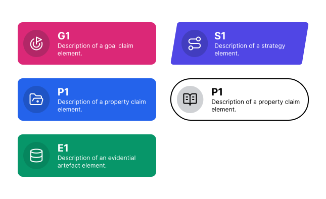
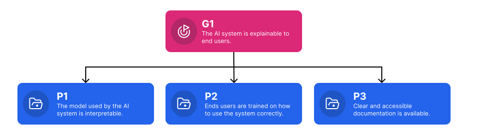
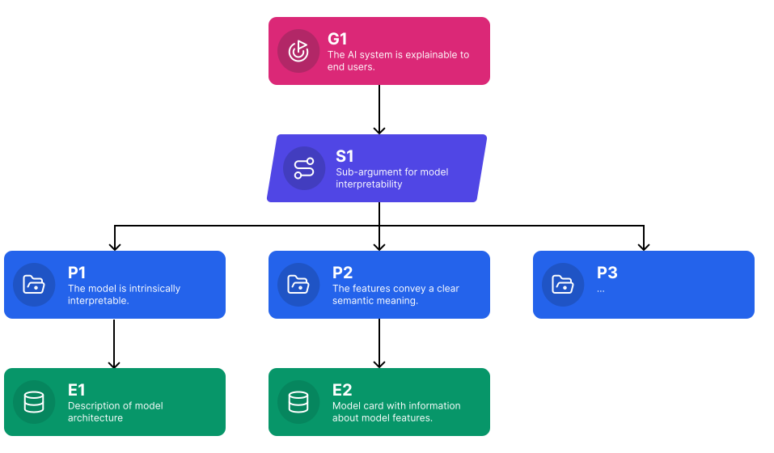
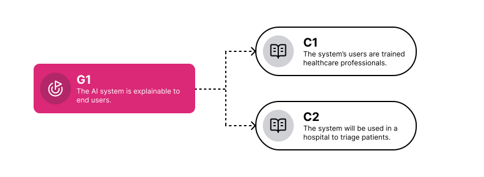
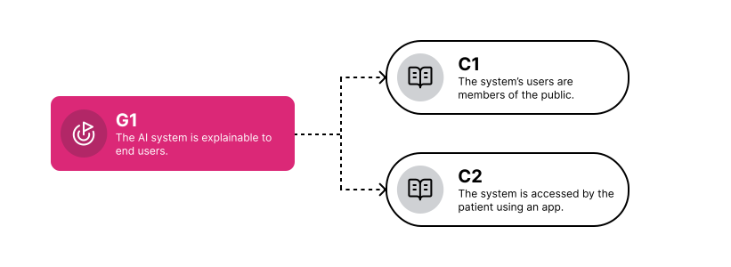

Pouring Your First Cup of TEA: An Introduction to Trustworthy and Ethical Assurance¶

Assurance is a process of building trust by clearly communicating the rationale behind why a decision or set of actions were taken.
Consider the following scenario.
You are in the market for a new car and go to a local dealership. One of the sales advisors recommends a particular car and talks to you about the various benefits of the vehicle, including an emphasis on its reliability. You buy the car based on the advisor's recommendations and drive it home.
However, in less than a week it turns out to have an issue with the engine. Frustrated, you take the car back to the dealership, and the sales advisor apologises for the inconvenience. They explain that all their cars undergo a thorough assessment before they are delivered to the dealership and reassures you that they are reliable. Nevertheless, the advisor agrees to get you a replacement vehicle. Reassured, you drive this new car home.
Later on, the car turns out to have another problem with the engine... the same problem as before! The sales advisor tries to convince you that this is just a series of unlucky incidents, but without clear evidence to support their claim (and two instances of counter-evidence) you are not convinced, demand a refund, and take your business elsewhere.
In this scenario, we can see how everyday forms of assurance involve providing evidence to help someone understand and evaluate the trustworthiness of a claim (or series of claims) being made about a system, service, product, or technology. The relationship between these claims and evidence constitute an argument, or a case. For example, an argument for a car's reliability, or a case put forward by a lawyer in court, based on evidence, to support a claim about a defendant's innocence.
The relationship between arguments, claims, and evidence is important. As Tim Kelly (1998) stated in his influential doctoral thesis on argument-based assurance (original quote adapted):
An argument without supporting evidence is unfounded, and therefore unconvincing. And, evidence without argument is unexplained—it can be unclear how goals or objectives have been satisfied.
In the above example, the sales advisor made claims about their cars being reliable and thoroughly assessed prior to sales, but these claims were not backed up by convincing evidence and were in fact undermined by the contrary evidence (i.e. two unreliable cars).
The relationship between trust and assurance is significant in nearly all contexts, and particularly in safety-critical domains (e.g. health, energy, manufacturing). Therefore, having accessible and effective methods, processes, and tools for providing trustworthy forms of assurance to stakeholders and users is crucial. This is where Trustworthy and Ethical Assurance (TEA) comes in.
What is Trustworthy and Ethical Assurance?¶
Trustworthy and Ethical Assurance (or TEA) is a method and platform that has been developed to help project teams provide clear and accessible forms of assurance for their technology or system (e.g. a digital twin or AI system).
Like the previous example, this could be that their system is reliable but it could also be related to some other assurance goal, such as safety, security, fairness, or explainability. However, TEA is neutral with respect to any particular goal. What is important is simply that the goal is assured by presenting a clear and structured argument, which establishes how a set of claims, linked to relevant forms of evidence, collectively justify the truth of the respective goal.
As a definition:
Trustworthy and ethical assurance (TEA) is a process of using structured argumentation to clearly demonstrate how a set of claims about some goal of a system are warranted, given the available evidence.
This emphasis on a structured argument means that TEA is a type of argument-based assurance. The term 'argument-based assurance' refers to the process of building and presenting a reasoned and justified argument for the truth of some top-level claim (i.e. a goal claim). And, a document that sets out this argument is known as an assurance case.
Types of Assurance Case
We can refer to an assurance case that presents an argument in support of a top-level goal that is focused on safety considerations as a safety case. Alternatively, if we are interested in assuring the fairness of a system as a fairness case, and so on for other types of goals or principles (e.g. explainability, security). We will refer to generic cases without a pre-specified goal as simply an assurance case.
Let's look at the core elements that make up an assurance case.
Core Elements of an Assurance Case¶
All assurance cases in the TEA platform contain the following core elements, depicted in Figure 1.

Figure 1—the core elements of an assurance case for the TEA platform.
Let's look at each of these elements in turn.
Goal Claim¶
A goal claim serves to direct the focus of an assurance case towards a particular value or principle that is taken to be desirable, normative, or otherwise significant. The content of the goal claim chosen will determine the set of lower-level property claims and evidence that are relevant and necessary for the overall assurance case. For instance, the set of claims and evidence needed to demonstrate that a service is 'secure', or that an algorithmic decision-making system is 'fair' may be quite different. As such, a goal claim should be the first element established when building an assurance case (even if it is subsequently revised or updated). For this reason, we sometimes refer to a goal element as the top-level goal claim to indicate that it is the primary focus for an assurance case.
Consider the example goal claim in Figure 2.
Figure 2—An example goal claim focused on explainability.
Putting aside the issue of what this AI system is or does for a moment, it should be clear that providing assurance for such a high-level goal will not be easy given the way in which the goal is currently formulated. Simply put, it's not clear what is meant by "explainable". There are many questions that one could ask here:
- Who are the outputs or behaviours of the system explainable to? Experts or lay people?
- Which techniques have been used to allow users to interpret the model's outcomes?
- Can decisions be contested if a user is not satisfied with an automated explanation?
- Is any information presented about the uncertainty of the system's predictions?
To address these questions, we need to add more specificity and structure. This is where , the next set of elements, property claims come in.
Multiple Goals and Modular Arguments
In this section, we only discuss arguments with a single goal. However, nested (or, modular) assurance cases can also be developed where multiple goal claims serve as sub-claims into a broader argument that subsumes the lower-level arguments.
Property Claims¶
Property claims are lower-level claims made about some specific property of a system, or perhaps about the project that developed the respective system. In one respect, property claims can be treated as lower-level goal claims1. Like a top-level goal claim, they are also propositions that require justification. However, while an assurance case may only have one top-level goal claim2, it will have many property claims.
Collectively, the set of property claims serve to establish the central argument for how a goal claim has been established by detailing properties of a project or the system that help justify why the top-level goal is likely to be true. Let's add some to the above goal claim, as shown in Figure 3.

Figure 3—an example assurance case showing a goal claim focused on explainability, with several property claims attached.
Identifying the necessary and sufficient set of property claims needed to support an argument can be challenging. In later sections, we will look at how this process can be made easier. For now, let's look at an element that supports this task by adding additional structure (or, scaffolding) to the argument.
Claims as Propositions
As you can see, there are two types of claims in TEA:
- Top-Level Goal Claim
- Property Claims
Both types of claims can be thought of as propositions. In the context of an assurance case, it is important that the goal and property claims are formulated as propositions as they enable us to determine what is being claimed and whether the argument and evidence are sufficient to establish the truth of the top-level goal claim or lower-level property claims. In most instances, the claims in an assurance case will be most similar to (5), and not, say, like the logical or mathematical truths (2) and (3). That is a statement that may be true or false. Examples of propositions include:
- All swans are white (falsifiable)
- All bachelors are unmarried (true by definition)
- The square root of 9 is 3 (mathematical truth)
- Water boils at 100°C (true under certain conditions)
- The AI system does not create discriminatory outcomes (empirical claim that could be contested)
Strategy¶
Understanding how a goal claim is jointly supported and specified by the constituent property claims can be challenging without additional structure. This is where strategy elements can be useful.
A strategy element helps to make clear the reasoning or approach taken to develop the overarching argument in support of the goal claim (or higher-level property claim). Unlike goal claims and property claims, however, strategy elements simply provide scaffolding (or a blueprint of sorts) for how the team plan to demonstrate that a certain goal or claim is met by breaking it up into sub-arguments. Let's consider our running example again.
Figure 4—an example assurance case with additional structure elements to help scaffold the argument and organise claims into sub-arguments.
There are several benefits to making the over-arching argument's strategy explicit:
- Guiding the argument: during iterative development, the set of strategy elements serve as placeholders that the project team can use to break down the complex task of decomposing goals. And, during communication, they can serve as a clear roadmap to help other stakeholders understand and follow their reasoning.
- Facilitating engagement and evaluation: external reviewers or stakeholders may wish to engage with or evaluate an assurance case, at different stages of development (e.g. during project development or compliance/auditing of the system). Understanding the strategy chosen by the project team is can help wider stakeholders assess whether the presented evidence is sufficient, if there are gaps in the argument, and, ultimately, help the project team and wider community develop more robust standards and best practices.
- Clarifying case relationships: strategy elements can connect multiple elements, such as goal claims to more detailed property claims. Leveraging this hierarchical structure ensures that all claims are supported by well-thought-out process of reasoning and deliberation, and can also help a project team identify relevant evidence to ground the overarching argument.
Let's now turn to consider evidence in more detail.
Evidence¶
Evidence is what grounds an assurance case. Recall the quotation from earlier:
An argument without supporting evidence is unfounded, and therefore unconvincing. (Kelly, 1998)
Whereas goals orient and direct an argument, strategies help scaffold the logic of an argument, and property claims help specify and establish an argument, evidence is what provides the basis for trusting the validity of the case as a whole. As the foundation of an assurance case, evidence is crucial!
The types of evidence that need to be communicated will depend on the claims being put forward. For instance, if a claim is made about the attitudes of users towards some system, then findings from a workshop or survey that explored these attitudes may be needed. Alternatively, if the claim is about a model's performance exceeding some threshold, then evidence about the test will be needed (e.g. benchmarking scores and methodology).
Let's look at a single branch of our running example, focusing on S1. We can expand the set of property claims for this strategy and consider what sorts of evidence may be suitable.

Figure 5—a partial view of an assurance case, focusing on a branch for a single strategy.
Similar to a legal case, where evidence needs to be admissible, relevant, and reliable, there are also standards for which types of evidence are appropriate in a given context. In some cases, technical standards may exist that can help bolster the trustworthiness of an argument, by allowing a project team to show how their actions adhere to standards set by an external community. In other cases, consensus may only emerge through the communication and evaluation of the evidence itself.
One final element remains to discuss: context. And, as many philosophers are keen to point out, a lot can depend on the context.
Context¶
In TEA, the context for an assurance case is made explicit by using context elements. For instance, consider the following two examples:
Example 1 
Example 2 
It should be clear why these two contexts would make a difference in the subsequent claims and evidence needed to justify the goal.
An AI system used by patients at home through a smartphone app ought not be designed in the same ways as one used by trained healthcare professional within a hospital environment. The latter environment is much more constrained and regulated than the former, and these constraints make a big difference. If this context was not provided, it would be impossible to evaluate or verify the validity or the claims, or the sufficiency and strength of the evidence.
Links¶
In addition to the above elements, there are two types of links that are used in Trustworthy and Ethical Assurance:
- Support Links
- Context Links
The primary link used in Trustworthy and Ethical assurance cases is a support link. These links represent a uni-directional relationship between two elements, such that the parent element is supported by the child element.
Permitted Support Links
The TEA platform restricts a user's ability to add invalid support links between elements. However, for clarity, the following support links are valid:
- Goal Claim to Strategy
- Goal Claim to Property Claim
- Strategy to Property Claim
- Property Claim to Property Claim
- Property Claim to Strategy
- Property Claim to Evidence
On the other hand, context links provide additional information for relevant elements, which has a constraining effect on the scope of the claim being made. For instance, goal claims made about a system may be constrained by a specific use context (e.g. an algorithm may operate fairly in the context of a highly constrained information environment where input data follow a particular structure).
Some examples of contextual information that could be added include:
- Context of Use (e.g. specific environment, set of users)
- Description of technology or technique (e.g. class of algorithms)
Permitted Context Links
The TEA platform restricts a user's ability to add invalid context links between elements. However, for clarity, the following context links are valid:
- Goal Claim to Context
- Property Claim to Context
- Strategy to Context
Value of Trustworthy and Ethical Assurance¶
One of the key strengths of Trustworthy and Ethical Assurance is its ability to facilitate clear communication among stakeholders, including researchers, developers, regulators, and system users. By presenting an argument graphically, as a well-structured set of elements and links, the underlying logic and structure of an argument is easier to discern.
Another value of TEA is that it promotes and supports a process of critical reasoning, which is designed to create a convincing argument that articulates why a top-level goal is true (or, more precisely why it is likely to be true). By making claims explicit and providing a structured framework for critical reasoning, TEA facilitates a transparent, understandable and reproducible assurance process.
Finally, it also offers a flexible and extensible way to integrate various types of evidence (and standards), such as empirical data, expert opinion, and formal methods, into a cohesive argument.
There are many other values of TEA, which we will get to in due course. However, TEA is also not without its challenges3. Constructing a rigorous argument requires significant domain expertise, can be time-consuming, and the quality of the argument is heavily dependent on the strength and sufficiency of the underlying evidence. Furthermore, there are also open research questions regarding how to update or modify assurance arguments as systems evolve or when new information becomes available.
We will discuss all of this, and more, in later modules. In the next module, we will look at how to use the TEA platform itself.
-
In the GSN standard, all claims are treated as goals and no distinction is made between goal claims and property claims. Our methodology maintains consistency with this standard, which is why property claims have the same type as goal claims, but adds an additional descriptive layer to better represent the ethical process of deliberation and reflection. ↩
-
See earlier callout box on 'Multiple Goals and Modular Arguments'. ↩
-
Habli, I., Alexander, R., & Hawkins, R. D. (2021). Safety Cases: An Impending Crisis? In Safety-Critical Systems Symposium (SSS’21). https://core.ac.uk/download/pdf/363148691.pdf ↩